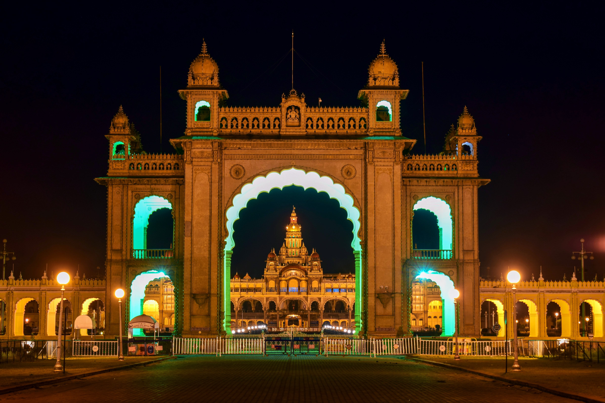

The Mysore Palace: A Jewel of Indian Architecture and Heritage
The Mysore Palace, also known as the Amba Vilas Palace, stands as an iconic symbol of India's rich history,
architectural brilliance, and cultural heritage. Located in the heart of the city of Mysore in the southern
Indian state of Karnataka, this magnificent palace is a testament to the grandeur of India's royal past.
The history of the Mysore Palace can be traced back to the 14th century when the Wadiyar dynasty, one of the
oldest royal families in India, established their rule in the region. However, the current palace that
stands today is the result of several renovations and reconstructions. The most notable transformation
occurred in the early 20th century when the original palace was destroyed by fire, and the British architect
Henry Irwin was commissioned to rebuild it in its present form.
Architecturally, the Mysore Palace is a captivating blend of various styles, including Indo-Saracenic,
Rajput, Hindu, and Gothic. Its exterior is a mesmerizing display of intricately carved arches, domes, and
minarets, showcasing a harmonious fusion of Hindu and Islamic design elements. The palace is a masterpiece
of craftsmanship, featuring ornate frescoes, stained glass windows, and decorative motifs that narrate
stories from Indian mythology and history.
One of the most awe-inspiring aspects of the palace is its grand Durbar Hall, an opulent space used for
royal audiences and state functions. The hall's ceiling is a remarkable piece of art, adorned with exquisite
patterns and depictions of the Dasara procession, a famous annual festival in Mysore.
The interiors of the palace are equally impressive, with rooms furnished in lavish styles that reflect the
lifestyle of the Mysore royalty. Visitors can explore the private chambers, royal corridors, and an
extensive collection of royal artifacts, including jewelry, weapons, and clothing, on display within the
palace.
Beyond its architectural splendor, the Mysore Palace holds immense cultural significance. It serves as a
symbol of Karnataka's rich heritage and a reminder of the state's glorious history under the Wadiyar
dynasty. The palace is also a major tourist attraction, drawing visitors from across the globe who come to
witness its grandeur and learn about India's royal legacy.
In conclusion, the Mysore Palace stands as a shining jewel of Indian architecture and heritage. Its
captivating blend of architectural styles, rich history, and cultural significance make it a must-visit
destination for anyone exploring the wonders of India. This iconic palace not only reflects the grandeur of
India's royal past but also serves as a symbol of pride for the people of Karnataka and the entire nation.
It is a living testament to India's rich and diverse cultural heritage, a place where history, art, and
tradition converge in a harmonious celebration of the past and the present.
WIKI